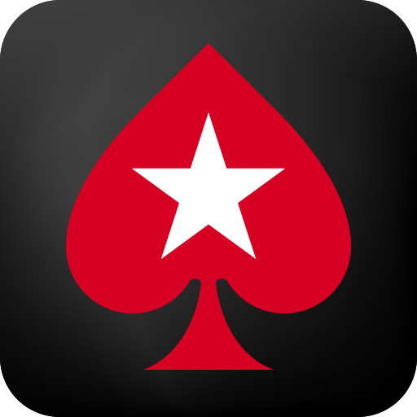
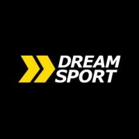

Info:
With a background in computer science and professional poker, I have developed a unique set of skills that enable me to excel in sales. I have a bachelor's degree from National Research University of Electronic Technology (MIET), where I learned the fundamentals of programming, data structures, algorithms, and software engineering. I also have a certification in technical sales issued by LinkedIn, where I gained insights into the role of the sales engineer and the best practices for selling complex solutions. For four months, I worked as a salesperson at DREAM SPORT, a leading company in the sports equipment industry. I interacted productively with customers, providing them with timely and effective assistance, and building strong rapport. I also handled various types of operations for the transfer of goods, using customer-oriented software and computer programs with ease and efficiency. I contributed to increasing the sales volume and customer satisfaction by applying my entrepreneurial and analytical skills, which I honed as a professional poker player at PokerStars for over three years. There, I researched the tendencies of players and used specialized tools for statistical analysis, while also adapting to different situations, managing risks, and coping with stress. I am a fast learner, a multitasker, and a goal-oriented person, who strives to achieve excellence in everything I do. I am always eager to explore new areas, emphasize the most important information, and find the application of that knowledge in real-life situations. I am looking for a challenging and rewarding opportunity that will allow me to leverage my skills, experience, and education, and to grow professionally and personally.
I am a fast learner, a multitasker, and a goal-oriented person, who strives to achieve excellence in everything I do. I am always eager to explore new areas, emphasize the most important information, and find the application of that knowledge in real-life situations. I am looking for a challenging and rewarding opportunity that will allow me to leverage my skills, experience, and education, and to grow professionally and personally.
Companies:
 